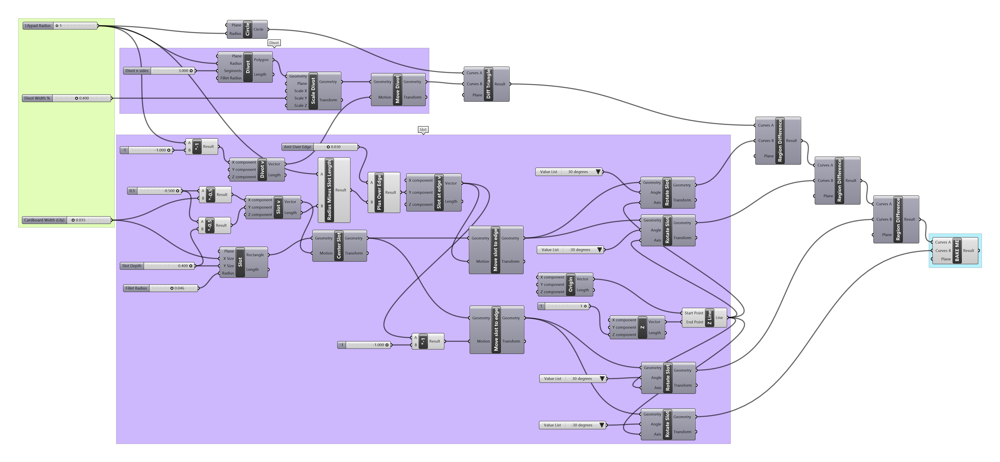

Gina Clepper's Assignment 2!
I decided to make a parametric version of my Assignment 1, with the following small changes:
- Improve tolerance so fit is slightly less snug
- Use fillets to make slot insertion easier
- Support construction in more than the x-y plane
I hoped that with these changes, the construction kit would be more fun to construct than in v1, where it was somewhat laborious to slot pieces together and where the possible configurations were fairly limited. I decided to do away with the lily flower connector pieces from v1 and instead allow lilypads to slot with each other and serve as the connectors.
In order to get aquainted with Grasshopper, I challenged myself to use Grasshopper components alone (not other manipulations in Rhino) to re-design my lilypad shape. I was successful in this with the exception of filleting the slots, which I'll discuss later.
Modeling

I re-created the lilypad shape in three steps (grouped in purple in the Grasshopper program above):
- Creating a circle
- Removing triangular divot
- Removing slots
I chose three parameters to be user-input (grouped in green in the Grasshopper program above):
- Lilypad radius (min: 1")
- Divot width (a percentage of the widest possible divot that doesn't interfere with the slots)
- Cardboard width
I assumed a set slot depth (0.4", same as in v1 of the construction kit).
The final result, labeled "BAKE ME" (in blue), is what the user bakes and cuts.
I also tried to implement fillets with a fixed radius:

However, while my filleting code yielded visually correct-looking fillets, the path involved some concealed duplication, which I only realized when the laser cutter began retracing its path. I ended up doing only this filleting step in Rhino without Grasshopper.
The resulting shape:
Fabrication
I used the same kind of cardboard as in v1, so I already had a good set of thickness measurements. I did, however, use my slot gauge designed in Assignment 1 to select a slightly wider slot size that would still grip the slotted piece without being as snug as in the previous version:
Now that I had adjusted the slot size so that lilypads could slot with other lilypads, I was able to make some fun spherical shapes:
Here is a 30-piece construction:
And here is evidence of it surviving another shake test!
Notes
Cardboard thickness: 0.04" on average
Slot tolerance: 0.035"
Settings: Power 100%, Speed 15%, Pulse 50%
Source file: Grasshopper
Source file: Rhino